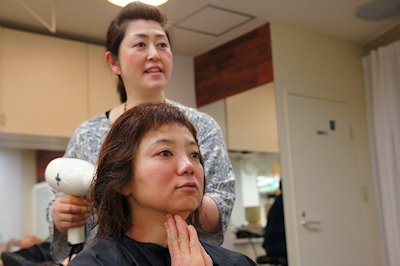

関西有数の繁華街に位置する人気の美容室・アルファカット様（大阪市心斎橋）では、副店長の日高のり子さんが中心になって定期的に、美容師さん向けにヘナケアのワークショップを開催されています。
ヘナを敬遠してしまう美容師さんも少なくない中、同店ではヘナをどのように位置づけ、業務に取り込むことで顧客満足度を高めておられるのかなど、美容師さんの視点で語っていただきました。
アルファカット 日高のり子さん
取材日 2016年4月28日
パーマとヘナの関係について
――アルファカットさんでは美容師さん向けのヘナのワークショップを定期的に開催されています。私たちも美容師さんにヘナの案内をするなかで、ヘナに好意的な美容師さんは少ないと感じています。「一般的にヘナは、エンドユーザーからの高い評価と、美容師さんからの低い評価」という温度差があることを認識しています。そのひとつの理由が「ヘナはパーマとの相性が良くない」という言葉の一人歩きがあるように思います。
日高のり子さん 当店のヘナ講習会・ワークショップでは、パーマとヘナの相性について説明をします。パーマ液はおおまかに説明しますと、『チオ系』『シス系』『システアミン』『亜硫酸』などがあります。
パーマのメカニズムは、髪の毛を膨潤させて中のタンパク質を切り、ロットで巻いてそれを曲がった形で酸化によって結合、定着させるわけです。人工的にカールを生み出す方法です。パーマ液はｐＨでいえばアンモニア水、モノエタノールアミンなどのアルカリ剤が入っているため、アルカリ性に振れています。
最近は酸性のパーマという『スピエラ』などの新しいパーマ液が出てきてもいます。健康毛にもあたりますが、実際に使う時には損傷毛が多いです。どちらでも使いますがあえて健康毛には使わないと思いますね。
まず、パーマをかけるというクライアントの意向があって、その意向に沿って専門家である美容師が髪の毛の性質や理想的な美しさについて考え、アイディアを頭のなかで生み出していきます。「パーマをかけたい」というひとことから、複雑な計算が頭のなかで始まります。その計算のもとになる手がかりが、クライアントの髪の毛がヘナでしっかりとコーティングされていたとして、その髪の毛を毛髪診断した時にどう考えるか？です。
『ソジャットヘナ／Sojat Henna』は酸化剤が入っていないので、『ソジャットヘナ／Sojat Henna』でケアをしている髪の毛は、植物の酸化する力だけでコーティングされています。結論からいえば、ほぼバージン毛に近い髪の毛になっていると考え、それに基づいてパーマ液を設定したほうが良いのです。
――健康毛としてとらえて構わない。というのは「ヘナはだめ」と思っておられる方にはショックなことですよね。また、酸化剤と言えば、様々なヘナ商品で染色実験をすると、毛束が『ソジャットヘナ／Sojat Henna』とは手触りの違う不思議な固さになる商品もありますね。
日高のり子さん 酸化剤による、その不思議な作用はお客様の髪の毛でも起きている可能性もあります。だからケアする髪の前歴がわかっているとアイディアも湧きやすいですね。毛先にアルカリカラーを使っているのか、パーマをしていたのかなどの前歴を考えるのです。
普通に、根本から綺麗にパーマを当てたいなと思った時、根本は生えたばかりだから健康毛です。ここには『チオ系』が入っていないとしっかりと当たらないですね。
でも仮に、毛先は前歴で傷んでいると設定するならば、ヘナでいくら綺麗にしても、パーマ液が浸透した時にやはり過剰に膨潤させると傷んでくる可能性があるので、『チオ系』よりも分子が細かい『システアミン』などを使うほうが良いのではないかと考えるのです。
『システアミン』は分子が小さいので髪の毛の中に浸透しやすい。表面がコーティングされている髪の毛にも比較的入りやすい。
もともとこれ自体が損傷毛用として作られています。髪の毛の中に残りやすく、残してウェーブ状に繋ぎやすいという特徴があります。
『シス系』は表面的に入るので、髪の毛への入りが悪いとムラになりやすい。それならば『チオ系』でがつんと入っている方がパーマは当たりやすいといえます。
だから、ヘナ毛には『チオ系』か『システアミン』が適していると、大きく分類するとこんな判断ができます。
ヘナをしている髪にパーマをする時は、ヘナをどのくらいの周期で、もしくはどれくらいの期間されているかで、パーマ液のアルカリ度を決めたほうが良いと思われます。
自毛のコルテックスがしっかりしている髪だと『チオ系』で綺麗にあたり、ダメージ毛がヘナで擬似的に健康毛になってるなら『システアミン』などを使うという方針を立てることができます。『システアミン』には高アルカリのもあるので、もちろん健康毛にも使えます。こんなふうにしてアルカリ度をコントロールする事が大事ですね。
根元はそう判断して、では中間から毛先はどうするか？です。
中間から毛先はダメージ毛として扱ってあげたほうがわかりやすいかなと思います。
『スピエラ』『サルファイト』『ＧＭＴ』なども使えますが、ウェーブ形成の計算がしづらいので、ウチでは使っていません。
――その３種類のパーマ液のお話は、ヘナケアした髪の毛に対してだけの話ですか？
日高のり子さん いえ、ダメージ毛に対してはこれらのパーマ液を使う意義がなかなか見いだせないのです。『サルファイト』は健康毛でも使う場合がありますが、その時にはかなり熱を加えます。加熱することでシスチン結合を切断します。
確かに、『サルファイト』の独特の当たり具合が好みで、あえて選択し、用いられるケースも有ります。でも、実際にウチでは扱っていません。手触りは確かに良いですが、あたりが難しいとおぼえてください。
ですが、知識や技術、センスなどを駆使してこれらの難しい状況でクリエイティブな挑戦をされている美容師さんもおられるかもしれませんね。
『システイン』は、還元がキューティクルの近傍で行われるということもあって、スカスカの損傷毛であれば、『チオ』よりもさっと入っていく。還元力が弱いのにキューティクルの近傍で行われる。なので、ヘナでキューティクルをカチッと固めてしまう場合には、入りが悪くなりムラになる可能性があるので、『シス系』はヘナ毛にはあえて使う必要が無いかなと思います。
では、ヘナ毛で有効になるのは、『チオ系』で高ｐＨの『システアミン』ということです。健康毛にしっかりあたる。
損傷毛であれば低ｐＨの『システアミン』でもかかりますが、残留しやすいので時間の経過とともに、毛先にはダメージが出てきやすくなります。
そして、この薬剤は熱変性を起こした髪の毛にもあたる場合があります。
熱変性というのは、ストレートパーマをあててアイロンの熱を加えて伸ばしたりするとタンパク質が変性するのです。髪の毛の中に残っているものに対して再度アイロンの熱などが加えられると、さらにカチカチに変化していき、最終的にはパーマは当たらなくなります。このストレートパーマの薬剤にも『システアミン』があります。
ヘナがどうこうというよりも、パーマ剤は使いすぎに注意することが前提であるべきです。
髪の質を演出するトリートメントについて
――パーマとヘナの相性が悪いという、いわば定説のようになっていることって、実はそうではないのですね。また、別の話題ですが、「美髪」にこだわってヘナの研究にも熱心な美容師さんのお店での取材で拝見した技法ですが、カラーリングしているお客さんに意図して毛先にはヘナをのせない。というアイディアがありました。
日高のり子さん それは、ヘナがどうだ、ということではないです。あくまでもその時にお店にいらっしゃったお客様の髪の毛の状態に基づいて生まれたアイディアですね。
毛先が痛んでいるお客様には、普通のトリートメント剤を使ってケアをするということはあり得ます。美容室で提供しているトリートメントに慣れている髪の毛の手触りをキープしたいための工夫ですね。
「ヘナによるトリートメント」は、自然なハーブの力だけでトリートメントをします。毛先が痛んでいる方の場合、はじめておやりになるとつるつる感ではなく、ごわついた感じという印象を持ってしまわれるケースがあります。特に、一般的なトリートメント剤を多用されてきた方は、「つるつる滑るコーティングの感覚」に慣れておられます。
美容室で提供するトリートメントは、熱を使わないもので、ほとんどが３浴式、２浴式と言われています。それは髪の毛をしっかりとコーティングするコート剤だと思ってください。髪の毛を触るとつるっとする感覚です。
つるっとしたこの感覚に慣れたお客様だと、ヘナをした時のその変化について誤解をされる可能性があります。
こうしたお客様の髪の毛の事情があって、だから毛先だけ従来のトリートメント剤を塗るということは十分あります。そのお話の例では、手触りの感覚をキープして差し上げたという話ですね。
美容室で『トリートメントクリア』を使うメリット
――その方法がスタンダードですか？
日高のり子さん いえ、そういうやり方もあり、違う方法もあります。
例えば私の施術例ですが、前回のケアでは２浴式のトリートメントをしたお客様に、今回は『ソジャットヘナ トリートメントクリア／Sojat Henna Treatment Clear』を使ってケアしました。
「普段のつるっとした感覚ではない手触りになりますよ。でもそれが自然なハーブだけで実現できる、ナチュラルな艶と、ナチュラルな手触りです」と説明してから実施しました。作った手触りではないが自然な健康毛に近い感覚になるよと説明して差し上げたところ、ご本人はすごく気に入っておられました。「サラサラ感が違う」と好評でした。
コーティング剤を使ったトリートメントだと、手触りの感覚の中に、どこかでベタンとする微妙な重たさを感じるのです。
これがヘナだとさらっとします。一本一本がコーティングされて、同じように一本ずつの重みも出る。しかしサラっとした感覚が生まれます。
くせ毛の方で、そのカールをなんとかおさめたいという方ならば、『ソジャットヘナ／Sojat Henna』では『トリートメントクリア／Treatment Clear』を使うだけでも十分良いですね。『サフランオレンジ／Saffron Orange』でももちろん構わないのですが、この例に出したお客様の場合は、カラーリングで自分の色を作りこんでいるので、その色を変えないように『トリートメントクリア／Treatment Clear』でトリートメントをしたのです。
技術で満足していただくのが美容室です。薬剤で満足してもらうのは、美容師の仕事の本質ではないです。技術と知識ありき。カット一つで髪の毛は変わってくるものだから、私たちはこれを大切にしないと。
この例でいえば、ケミカルのトリートメント剤と、『ソジャットヘナ／Sojat Henna』の『トリートメントクリア／Treatment Clear』を比べてみて、本当に『トリートメントクリア／Treatment Clear』を使って綺麗になるならば、そっちを使ったほうが良いのです。
カラーリングをするときに前処理をして、根元にアルカリカラーを使い、毛先にノンアルカリを使う。後処理をする。これだと薬剤は４種類使ったことになりますよね。
しかし、根元にアルカリカラーを使い、毛先に『トリートメントクリア／Treatment Clear』を使えば、もうそれで終わり。トリートメントという工程そのものが完了。それならお客様のお金も使わずに、仕上がりも良くなります。
そして、これを続けると害はなく、髪質が良くなるだけ。
多くのケミカル製品はシリコン剤なので使えば使うだけ髪の毛がガチガチに固められていく。その上からお客様がご自宅でヘアアイロンを使う。そうすると髪の毛は鉄の鎧をまとっているようなものです。熱変性を起こしてしまっていて、その髪の毛に何かしようとしても入るはずがない。手触りも悪い。だから「トリートメントをしているのに、なぜ私の髪の毛はこんなことになってしまったの？」という事態になるのです。
知らない間に髪の毛を痛めることになっていて、これに気づいて改善している美容師さんもたくさんいます。当然、メーカーさんもこれに反論されます。いろんな情報を鵜呑みにしずぎて、お客様の髪の毛が傷む条件を作ってしまっています。
そうではなくて、美容師ひとりひとりが、目の前のお客様の髪の毛を見ながら、どうやったらこの人が本来持っている美しさを実現できるのかを考えてあげる。あるいはどうやったら毎日の手入れがしやすくなるのかを考える。
ケミカルの薬剤は、本来、ものすごく難しいものですよ。フェイシャルで言えば、食事や生活習慣の改善ですっぴんが綺麗になるのと、ファンデーションによる綺麗さはやはり質が違います。すっぴんが綺麗になれば若返るし、元気に見えます。ファンデーションが上手になって実現する美しさと、すっぴんで実現する美しさとどっちが良いですか？お客様に選んでもらうのは当然ですが、美容師さんがこのふたつを上手に提案できれば、まずはそれが大切なことなのでしょう。
美容室とヘナの相性について〜一人としてネガティブなご意見はない
――ヘナがお店で使う薬剤と干渉しあうケースはあるのでしょうか？
日高のり子さん 私がお客様にしているケアの内容では、ヘナはまったく邪魔をしていないですよ。
パーマにもカラーリングにも邪魔にならないのです。
根元に白髪染をして毛先に『トリートメントクリア／Treatment Clear』をします。お客様は喜んでお帰りになられます。ブリーチして栗毛色にされている方の場合は、『サフランオレンジ／Saffron Orange』だとその上からオレンジ色が入るので、ケア前の栗毛色にはならない。ですから元の色に戻したことは１度だけありますが、手触りや髪質など根本的な要素については、誰一人として、ネガティブなご意見を頂いたことはないのです。
――「ヘナをするとパーマがかからない」という話は、美容室さんではよく聞くのです。しかし、それはヘナの作用ではなく、どうも、酸化剤がヘナに混入されている商材についての意見であるとも言われています。
日高のり子さん 酸化剤が入っているんだろうなあと思うということは、美容室という現場では、パーマ液はアルカリ剤です。
どちらが先かという問題でもありますが、酸化剤でキューティクルが「過度に収斂した」ところにパーマ液の代表選手である『チオ系』のアルカリ剤がついても、傷めますね。手触りが悪くなります。
その負のスパイラルで言いますと、多くの場合は「わあ、こんな強いパーマ液を使ってはいけないんだ」と判断して『シス系』などの弱いパーマ液を使う。そうなると今度は髪の毛の中にパーマ液が浸透しないから、もはやパーマがあたらない。無駄になった。という話になってしまうのです。だけど、それは、元をただせば、酸化剤が入っているヘナを使うから起きるのです。
一方、ストレートパーマを当てた後に、同じように酸化剤が入ったヘナをすると、キューティクルが収斂します。その現象をヘナショックと呼んでいる美容師さんもおられるほど、心臓に悪い現象です。
これも前提条件ははっきりしています。そもそもストレートパーマそのものに、縮毛をまっすぐにするという技術の性質上、「使い続ける」「習慣づけられてしまう」というお客様の生活の中に根付いてしまうのが問題です。
髪の毛は、ストレートパーマを当て続けることで、ビロンビロンになります。習慣づけられているので「当て続ける」のです。無理やりやっていることですから。
そうやってビロンビロンになった髪の毛に酸化剤入りのヘナを乗せると、今度はきゅーっと縮こまります。チリチリになります。アルカリに傾いている髪の毛に酸化剤入りヘナを乗せると収斂させることになります。
それで「ストレートパーマをしているお客さんにヘナを使うと危ない」という言葉だけが独り歩きしてしまうのでしょう。「そのヘナに酸化剤が入っているからだ」ということが見えなくなってしまうのです。染色するというケアの現場で混乱が起きるのは、いわば薬剤の上からもう一度薬剤をかけることになるからで、これはたしかに難しいのです。
しかし、本質で言えば、「混ざりもののないヘナをパーマやカラーリングに組み合わせることは何ら難しいことではない」ということが事実です。
過度の収斂を起こすこともない。強制酸化させるわけでもない。ゆっくり、ヘナの本来のスピードで酸化するだけですから。
本質を見る
混ざりもののないヘナをパーマやカラーリングに組み合わせることは何ら難しいことではない
――ヘナとパーマの相性の秘密がこれで明らかになってきました。一方で、ヘナにとってはもうひとつの課題である「ヘナは面倒だと思われている」ということについて。
日高のり子さん これもヘナの質の問題ですよね。ライムを混ぜるとか紅茶を混ぜるとか、頭に乗せて何時間も待たなければ染まらないとか。そういう話だけが延々と伝わっています。だからそんなものはセラピストさんに任せておけば良いという話になってくるのです。
美容室という現場はお客様に心地よくケアを楽しんでいただく一方で、時間の管理もしなければ成立しません。
だから、ヘナはお客様がご自分でご自宅でどうぞ、という発想になってしまうのでしょう。
でもそうではなくて、パーマのお客様にもヘナを組み合わせると、リッジ（きれいなうねり）が出やすくなり、ハリコシが出てくるのです。酸化剤が入っていないハーブとしてのヘナの実力が伝われば、この大きな誤解が解けるのではないでしょうか。お客様の美を生み出す者が良いヘナを使わないのはもったいないです。
カラーというくくりで見てしまうと、ヘナとは白髪染めの代用。それで「狙った色が出ない」と言われます。美容師さんが現場で様々な薬剤を調合し、微妙な色合いを狙い通りに出していきます。それが職人技として評価されると思い込んでいるから、ヘナを評価できなくなります。
そうではなく、ヘナは髪質改善のハーブですという当たり前の説明ができるようになりたいですね。
髪をより健康な状態に戻してパーマにもリッジを出す。ストレートパーマをあてたらふわっと膨らんでしまう人にもその膨らみを抑えることに使えます。
既存の薬剤との良いコンビネーションを実現できます。何よりもヘナは危なくないからお客さんからも喜ばれます。
その意味では、お客様のほうがヘナに対して先入観なく受け取りやすいのではとも思えます。
美容師さんは、『ソジャットヘナ／Sojat Henna』のように酸化剤が入っていない質の良いヘナを使って、『チオ系』によるパーマで、「ヘナとパーマ」「ヘナと美容師という仕事」の相性の実験をされてみるのが良いでしょうね。
美容室という空間に「お客様の美を一緒に作る喜び」が満ち溢れていたらこんなにうれしいことはないでしょう。
――美容室は美を作る場所。ヘナとおしゃれの融合。髪の毛をどう演出するかというところで、上手に組み合わせていただきたい。
日高のり子さん そうです。単純に、そこが大事なのです。とにかく薬剤が入っているヘナが出回りすぎていました。薬剤が入っていないヘナで、ゆっくり作用するとわかっていれば、怖がる必要はないと思いますよ。それよりも、美容室という空間に「お客様の美を一緒に作る喜び」が満ち溢れていたら、美容師としてこんなにうれしいことはないでしょう。そんなお店が増えてほしいです。
※日高のり子さんが勤めておられる美容室アルファカットさんでは、定期的にプロ向けのヘナ講習会を開催されています。ぜひ、開催情報をチェックしてご参加ください。
ALPHA CUT
Tel.06-6251-5417 〒542-0081 大阪府大阪市中央区南船場3-11-6 4F
http://www.alphacut.co.jp/ |